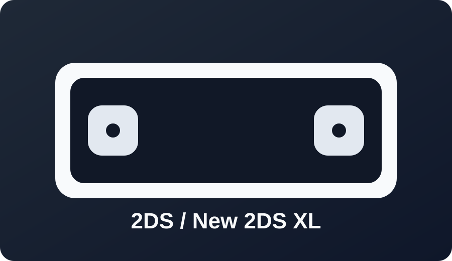

2DS / New 2DS XL

Best path: Seedminer with Bannerbomb3/Frogminer route depending on firmware and region.
Check your exact firmware before starting.

Best path: Seedminer with Bannerbomb3/Frogminer route depending on firmware and region.
Check your exact firmware before starting.